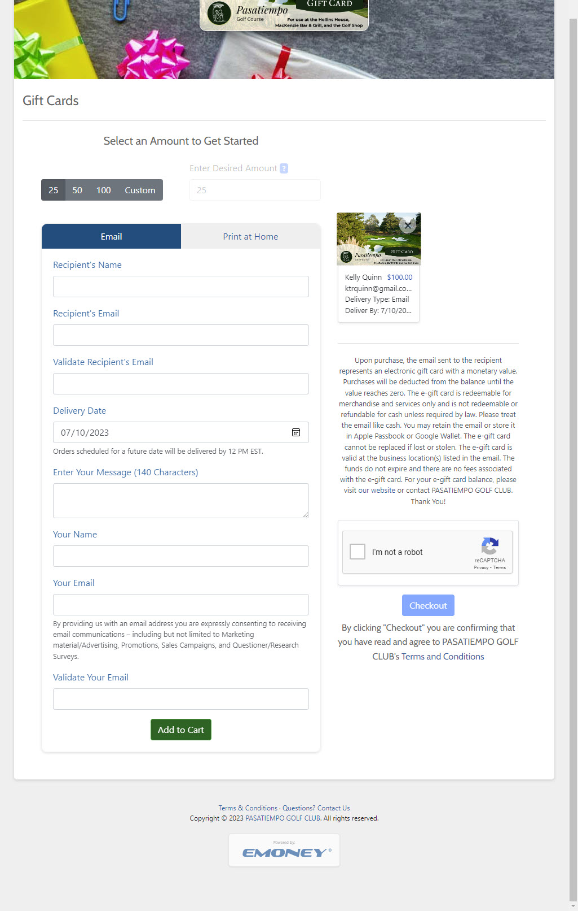

← Go Back
Key Accomplishments at Electronic Transaction Systems (ETS)
At Electronic Transaction Systems (ETS), I was involved in several key projects that significantly improved the functionality, accessibility, and cost-effectiveness of various platforms and tools.
This included the development of a 508a and a11y compliant gift card marketing page, embeddable widgets/iframes, and customer internal support tools, as well as the migration from an on-premise Microsoft SQL database solution to a more cost-effective Azure Cosmos DB database.
- Developed a 508a and a11y compliant gift card marketing page, embeddable widgets/iframes, and customer internal support tools, ensuring the site was accessible to all users, including those with disabilities.
- Built software for QA teams to assist in QA automation, specifically with Playwright and Selenium, enhancing the efficiency of the QA process.
- Migrated from an expensive on-premise Microsoft SQL database solution to a more cost-effective Azure Cosmos DB database, significantly reducing costs.
- Contributed to the development of ETS's Virtual Gift Card private network platform using Blazor, Dotnet, C#, HTML, CSS, and TypeScript, enhancing the functionality and user experience of the platform.
